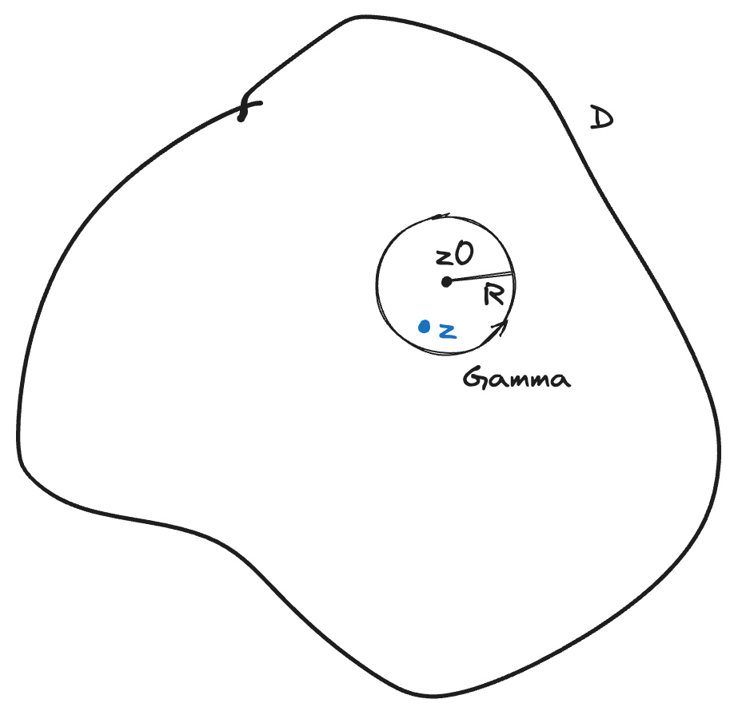
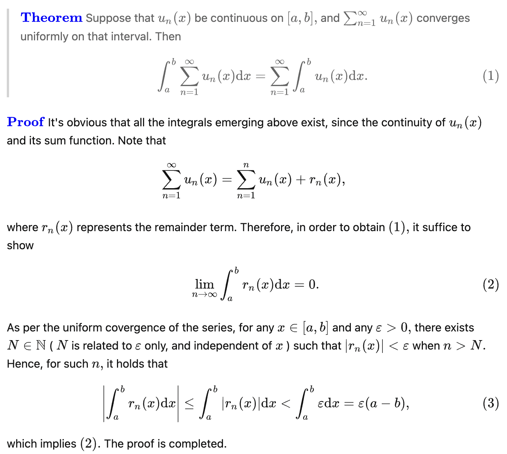
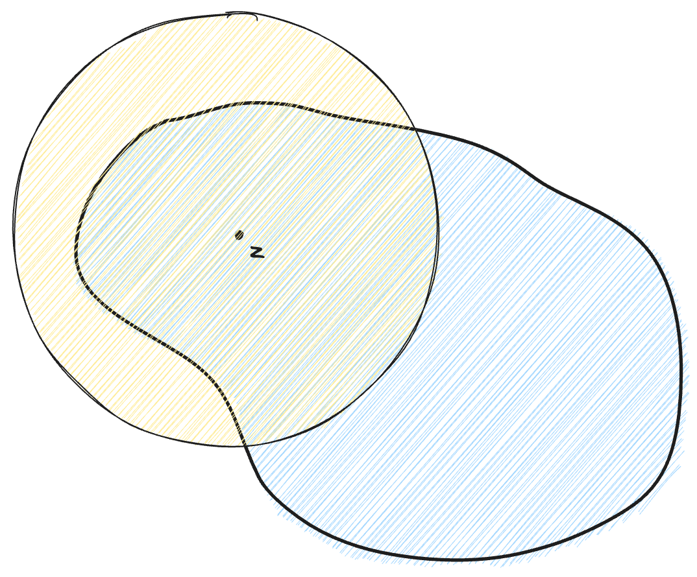
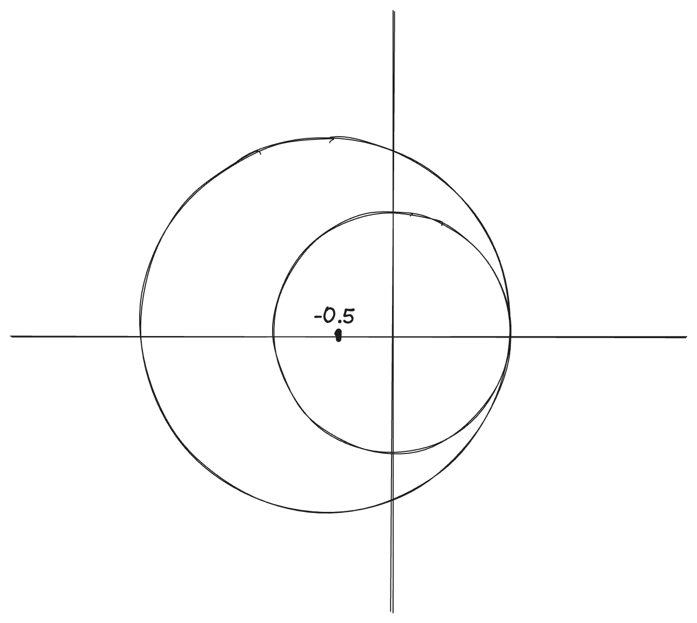
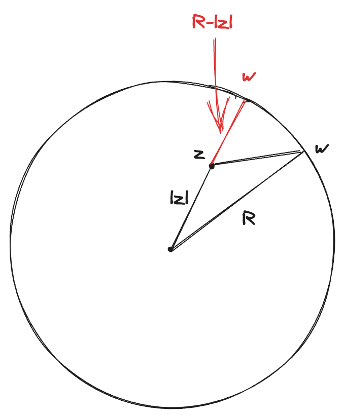

解析函數的冪級數展開
Power series
Theo Let \(D\) be a domain in \(\mathbb{C}\). If \(f\in O(D)\), then \(f\in C^{\omega}(D)\)
\(C^{\omega}(D)\) means locally function can be represented by a power series \(\blacklozenge\)

\(\Gamma=\partial B(z_0;R)\)
\(f\in O(D)\) \[ \therefore \exists R>0, s.t. \bar{B}(z_0;R)\subset D \]
If \(z\in B(z_0;R)\), \(w\in \Gamma\). Then \[ \begin{aligned} f(z)&=\frac{1}{2\pi i}\int_{\Gamma}\frac{f(w)}{w-z}dw\\ &=\frac{1}{2\pi i}\int_{\Gamma}\frac{f(w)}{w-z_0-(z-z_0)}dw \end{aligned} \]
If \(\exists r>0\)， \(s.t. \ |z-z_0|\leq r<R\). Then
\[ \begin{aligned} &=\frac{1}{2\pi i}\int_{\Gamma}\frac{1}{w-z_0}\frac{f(w)}{1-\frac{z-z_0}{w-z_0}}dw\\ &=\frac{1}{2\pi i}\int_{\Gamma}\frac{1}{w-z_0}\left(\sum_{k=0}^{\infty}\left(\frac{z-z_0}{w-z_0} \right)^k \right)f(w)dw\quad \ast\\ &=\sum_{k=0}^{\infty}\left(\frac{1}{2\pi i}\int_{\Gamma}\frac{f(w)}{(w-z_0)^{k+1}}dw \right)(z-z_0)^k\quad \ast\ast\\ &=\sum_{k=0}^{\infty}a_k(z-z_0)^k \end{aligned} \]
i.e. \(\displaystyle a_k=\frac{1}{2\pi i}\int_{\Gamma}\frac{f(w)}{(w-z_0)^{k+1}}dw\)
From \(\ast\) to \(\ast\ast\)，use Math Analysi (II)

\[ f(z)=\frac{1}{2\pi i}\int_{\Gamma}\frac{f(w)}{w-z}dw \]
\[ f'(z)=\frac{1}{2\pi i}\int_{\Gamma}\frac{f(w)}{(w-z)^2}dw \]
\[ f''(z)=\frac{2}{2\pi i}\int_{\Gamma}\frac{f(w)}{(w-z)^3}dw \] \[ \vdots \]
\[ f^{(k)}(z)=\frac{k!}{2\pi i}\int_{\Gamma}\frac{f(w)}{(w-z)^{k+1}}dw \]
\[ \therefore a_k=\frac{f^{(k)}(z_0)}{k!} \]
\[ \Rightarrow f(z)=\frac{f^{(k)}(z_0)}{k!}(z-z_0)^k \]
解析延拓
\(a_k\)的值跟\(R\)没关系，圆盘可以任意大小。有可能出现展开后超出domain：解析延拓（holomorphic continuation）

Ex.
\[ f(z)=\sum_{k=0}^{\infty}z^k \Rightarrow \frac{1}{1-z} \]
\(z<1\)时收敛，\(z\geq 1\)时发散
在\(z=-\frac 12\)展开， \[ f(z)=\sum_{k=0}^{\infty}b_k(z+\frac{1}{2})^k \]
在\(|z+\frac 12|<\frac 32\)上统统收敛

Cauchy Estimate
Theo Cauchy's estimate
let \(M=\max_{|z-z_0|\leq R} |f|\)
Then
\[ |a_k|\leq \frac{M}{R^k}. \ \blacklozenge \]
\[ |a_k|=|\frac{1}{2\pi i}\int_{\Gamma}\frac{f(w)}{(w-z_0)^{k+1}}dw |\leq\frac{1}{2\pi}\cdot M\cdot \frac{2\pi R}{R^{k+1}}=\frac{M}{R^k} \]
控制了函数值就能控制系数\(a_k\)
Liouville定理
f: entire function if \(f\in O(\mathbb{C})\)
e.g. \(e^x,\sin x, p(x)\) polynomial
\[ e^z=\sum_{k=0}^{\infty}\frac{z^k}{k!} \]
\[ \sin x=\frac{e^{iz}-e^{-iz}}{2i},\quad \cos z=\frac{e^{iz}+e^{-iz}}{2} \]
Theo (Liouville)
Any bounded entire functions is constant \(\blacklozenge\)
pf. 1
\[ f(z)=\sum_{k=0}^{\infty}a_kz^k,\quad |f(z)|\leq M, \forall z\in\mathbb{C} \]
\[ \therefore |a_k|\leq \frac{M}{R^k} \]
当\(k\geqslant 1\)时,
\[ |a_k|\leqslant \lim_{R\rightarrow \infty}\frac{M}{R^k}=0 \]
\[ \therefore f(z)=f(0)\ \blacksquare \]
pf. 2
\(z\in \mathbb{C}\), choose \(R>|z|\)
\[ \begin{aligned} |f(z)-f(0)|&=\bigg|\frac{1}{2\pi i}\int_{|w|=R}\frac{f(w)}{w-z}dw-\frac{1}{2\pi i}\int_{|w|=R}\frac{f(w)}{w}dw\bigg|\\ &=\bigg|\frac{1}{2\pi i}\int_{|w|=R}(\frac{1}{w-z}-\frac 1w)f(w)dw \bigg|\\ &\leqslant \frac{1}{2\pi i}\int_{|w|=R}|\frac{z}{w(w-z)}|\cdot |f(w)|\cdot |dw|\\ &\leqslant \frac{1}{2\pi i}\cdot M\cdot \frac{|z|}{R(R-|z|)}\cdot 2\pi R\\ &=\frac{M|z|i}{R-|z|}\rightarrow 0\quad (R\rightarrow \infty)\ \blacksquare \end{aligned} \]
\((w-z)\)边界到圆内一点的距离一定\(\geqslant R-|z|\)

代數基本定理
Theo (Fundamental theorem of algebra)
let \(p(z)\) be a complex-valued polynomial of \(\deg P\geqslant 1\).
Then \(\exists w\in \mathbb{C}, \ s.t.\ p(w)=0\) \(\blacklozenge\)
pf. \(p(z)=az+b\quad a\neq 0\), \(w=-\frac{b}{a}\)
Assume \(\deg P=k\geqslant 2\)
pf. 1
Assume \(p(z)\neq 0, \forall z\in \mathbb{C}\)
\[ \therefore q(z)=\frac{1}{p(z)}\in O(\mathbb{C}) \]
\[ \begin{aligned} |q(z)|&=\frac{1}{|a_kz^k+a_{k-1}z^{k-1}+\cdots+a_1z+a_0|}\\ &=\frac{1}{|z|^k\cdot |a_k+\frac{a_{k-1}z^{k-1}+\cdots+a_1z+a_0}{z^k}|}\\ &\leqslant \frac{2}{|a_k|\cdot |z|^k} \end{aligned} \]
最后一步是因为 \[ \frac{|a_k|}{2}\leqslant |a_k+\frac{a_{k-1}z^{k-1}+\cdots+a_1z+a_0}{z^k}| \]
当\(z\rightarrow \infty\)时，\(|q(z)|\rightarrow 0\)
\(\therefore q\) is bounded, entire
By Liouville, \(q\equiv c\), const
\[ \therefore p(z) \text{ is a constant function} \]
矛盾 \(\blacksquare\).
pf. 2 用最根本的Cauchy定理證
Assume \(p(z)\neq 0, \forall z\in \mathbb{C}\) and \(\big[\)\(p(x)\) is real if \(z=x\in \mathbb{R}\)\(\big]\).
If \([ \ ]\) does not hold, then consider \(p(z)\bar{p}(z)=Q(z)\), \[ \bar{p}(z)=\bar{a_k}z^k+\bar{a_{k-1}}z^{k-1}+\cdots +\bar{a_1}z+\bar{a_0} \]
Set \(a_1=x_1+iy_1, a_2=x_2+iy_2\)
\[ a_1\bar{a_2}+a_2\bar{a_1}=x_1x_2+y_1y_2\in \mathbb{R} \]
Set
\[ I=\int_0^{2\pi}\frac{d\theta}{p(2\cos \theta)}\neq 0 \]
在\(\theta\in[0,2\pi]\)上，\(2\cos \theta\in [-1,1]\)，\(I\neq 0\)沒有問題
\[ p(z)=a_kz^k+a_{k-1}z^{k-1}+\cdots+a_1z+a_0 \]
\(z=e^{i\theta}=\cos \theta+i\sin\theta\)
所以\(\displaystyle \cos\theta=\frac{z+\bar{z}}{2}=\frac{1}{2}(z+\frac{1}{z})\Rightarrow2\cos\theta =z+\frac{1}{z}\)
\[ \begin{aligned} p(2\cos\theta)&=a_k(z+\frac{1}{z})^k+a_{k-1}(z+\frac{1}{z})^{k-1}+\cdots+a_1(z+\frac{1}{z})+a_0\\ &=\frac{1}{z^k}Q(z) \end{aligned} \]
If \(z=0\), \(Q(0)=a_k\neq 0\)，最高次係數不為0
If \(z\neq 0\), \(p(2\cos\theta)\)也是个多项式，\(p(2\cos \theta)\neq 0\)，所以\(Q(z)\neq 0\)
既然\(Q(z)\)总是不為0，把它放在分母上仍是解析函数
\[ I=\int_{0}^{2\pi }\frac{d\theta}{p(2\cos\theta)} \xrightarrow[d\theta=\frac{dz}{iz}]{dz=ie^{i\theta}d\theta}\int_{|z|=1}\frac{z^k}{izQ(z)}dz \]
由Cauchy定理 \[ I=\int_{|z|=1}\frac{z^{k-1}}{iQ(z)}dz=0 \]
矛盾. \(\blacksquare\)